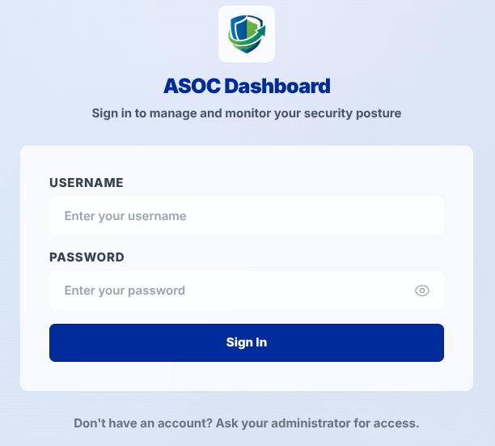
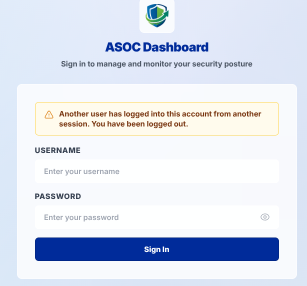
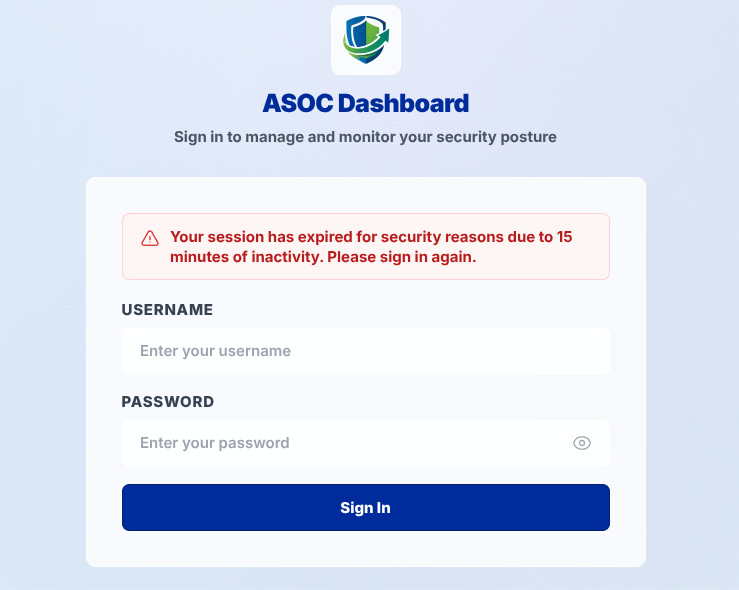

Authentication & Security
2.1. Login
To access the ASOC Client Dashboard, open your web browser and navigate to the following secure portal: https://client.infoguard.id.
Enter the authorized username and password provided by your administrator into the login form, then click the Login button. Ensure that your credential details are entered accurately to authenticate successfully.

2.2. Single Active Session Security Mechanism
An account can only maintain one active browser session at any given time. Logging in with the same account credentials from another browser window, tab, or separate workstation will immediately and automatically disconnect the previous session. This enforcement strictly restricts unauthorized credential sharing.

2.3. Inactivity Timeout
Sessions left idle without user interaction terminate automatically to safeguard accounts on unattended workstations. The system concludes the session after 15 minutes devoid of mouse movements, keyboard input, page scrolling, or screen gestures, redirecting the user back to the login screen.
